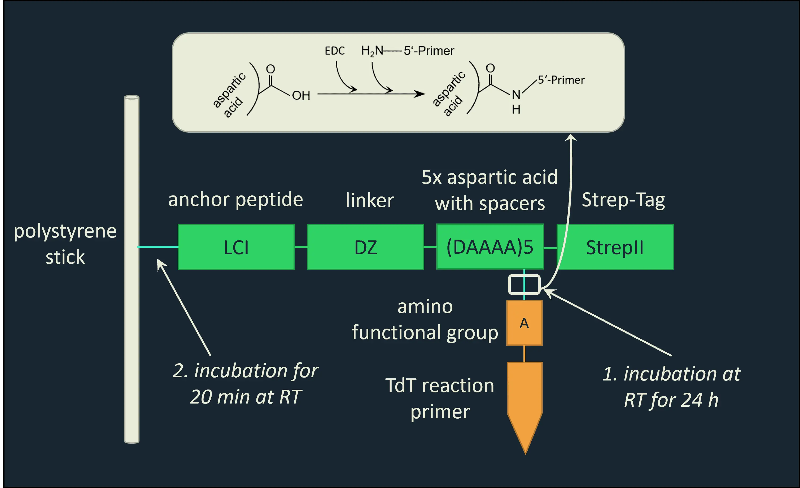

Overview
The goals for our experiments were the following:
- Proving that terminal transferase (TdT) can attach nucleotides to a single-stranded primer
- Analysis of characteristics and properties of our enzyme, terminal transferase (TdT)
- Immobilization of ssDNA primer
- Performing a cyclic semi-specific synthesis, in which an unknown number of one nucleotide type is attached in each reaction cycle
- Demonstrating that this semi-specific synthesis works and that data can be encoded and recovered by sequencing the created fragments
- Investigating the problem of secondary structures during strand elongation
Read our lab Notebook, Protocols, or Results for further information.
TdT Tailing Reaction
The first step was to test whether TdT attaches nucleotides to an ssDNA primer. A standard TdT tailing reaction was performed and verified by gel electrophoresis. To characterize the enzyme properties, multiple parameters such as incubation time and temperature as well as nucleotide, primer, cofactor, and enzyme concentration were varied. Different nucleotides and combinations of those were tried to reveal significant differences in incorporation speed.
This information was crucial for building the hardware that can attach a roughly equal amount of each nucleotide, following the principle of: “As little as possible and as much as necessary“. Thus, the goal is to find conditions where each strand is elongated as little as possible, but with at least one nucleotide in each cycle (see Modeling).
For this purpose, the length distribution of the synthesized fragments was analyzed by capillary electrophoresis.
Furthermore, enzymes from different manufacturers were tested. In the first experiments, we used a recombinant TdT from NEB, but all other experiments were performed with a recombinant TdT from Thermo Fisher Scientific. The two manufacturers use very different reaction buffers, which significantly changed the incorporation speed and nucleotide preferences of TdT. We kept working with the Thermo Fisher TdT, thus all our summarized results concern the Thermo Fisher TdT.
Cyclic Synthesis and Primer Immobilization
We have established a cyclic synthesis in solution by adding the next type of nucleotide after each elongation. The primer concentration was higher than in the standard reaction to increase the conversion and limit the number of incorporated nucleotides. Additionally, the nucleotide concentration was increased in each reaction step to achieve the right transitions.
The disadvantage of the synthesis reaction in solution is that the different nucleotides mix after the first few reaction cycles because there are excess nucleotides, which were not incorporated in the previous reaction step. Hence, it is not ensured that the added nucleotide is also the incorporated nucleotide and synthesis errors accumulate.
Therefore, the sample would have to be purified after each step to isolate the extended ssDNA strands and lose excess nucleotides. Unfortunately, after purification with standard purification kits, another TdT tailing reaction does not work (see Results).
Immobilizing the primers can solve this problem and is the basis for a cyclic synthesis of longer strands. Current techniques involve immobilization on a streptavidin-coated surface, for instance in a flowcell with different mastermixes 1. For our purpose, a novel and simple method was developed: The primers were immobilized on a stick and dipped into different reaction solutions with one type of nucleotide, respectively. Various immobilization systems were tried:
- Primers with amino modification and anchor peptide LCI
- Primers with maleimide modification and anchor peptide LCI
- Biotinylated primers and streptavidin-coated magnetic beads

Figure 1: Immobilization of amino-labeled TdT reaction primers via anchor peptide fusion protein.

Figure 2: Immobilization of maleimide-labeled TdT reaction primers via anchor peptide fusion protein.
For the first two methods, we used fusion proteins from the Leibniz Institute of Interactive Materials (DWI). The amino oligo can bind to a carboxyl functional group in the fusion protein in an EDC mediated reaction and the maleimide oligo binds to the thiol functional group of a cysteine in the fusion protein (see figure 1 and 2). Those conjugates, consisting of the modified primer and the anchor peptide fusion protein, were bound to a polystyrene stick.

Figure 3: Immobilization of biotin-TEG-labeled TdT reaction primers via streptavidin-coated magnetic beads on magnet stick.
For the third method, we incubated our biotinylated primers with streptavidin-coated magnetic beads. We used biotin with the spacer TEG to minimize steric hindrance (see figure 3). The beads were immobilized with a magnet stick.
The DIP Method
To elongate the ssDNA strand in a controlled manner, we used the third immobilization system with the streptavidin-coated magnetic beads and the magnet stick and developed the DIP method:
Four different Eppendorf tubes containing the TdT reaction mixture and one nucleotide were prepared. Another tube contained the biotinylated primer. The beads were added to the latter so that the primer could bind to them. Then, a strong neodymium bar magnet surrounded by a plastic envelope (fused pipette tip) was dipped into the tube. The magnetic beads with the biotinylated primer could now be transferred to the first reaction tube. The bar magnet was removed from the plastic envelope so that the magnet beads were released into the reaction solution. After the reaction, the bar magnet was placed back into the plastic envelope, transferring the beads to a wash tube with water to lose excess nucleotides. It was then dipped into the next reaction solution and the above steps were repeated until the strand reached the desired length and sequence. The reaction time was varied in different experiments to find out how many nucleotides were attached. Nuclease-free water was used as the wash solution and elution of the primer was then performed with a Strep-Tactin solution. Furthermore, we designed and built a Hardware that can autonomously perform the DIP method.
Gel Electrophoresis
The final target was to sequence our self-generated DNA fragments. However, for the first sample analysis, we chose agarose gel electrophoresis due to easy handling and fast results. As the first samples were generated with only one type of nucleotide, length determination was most important. For our samples (low concentrated very short ssDNA fragments, ~20-1000 nt), the best length analysis method (apart from capillary electrophoresis) would typically be a denaturing PAGE, which was tried but rejected because of inconsistent results and performance difficulties.
At the beginning of the project we concentrated our efforts on optimizing gel electrophoresis as making our DNA strands visible was the first critical step. At last, we found conditions for an agarose gel electrophoresis that enabled us to clearly see ssDNA samples (see Engineering success).
A 2.5% agarose solution in TBE buffer was used. The gel was stained with SYBR gold solution for 20 min. A dsDNA ladder was used because we did not need a precise length determination. These conditions were suitable for a first rough assessment of the samples, which would then undergo other analysis steps.
Capillary Electrophoresis
We had the possibility to let our samples be analyzed with a fragment analyzer at Fraunhofer Institute IME. This analysis method has several advantages over gel electrophoresis: Fragments from 35 bp to 500 bp can be sized to within 1 bp resolution and can be polymorphic in their lengths 2. First of all, one needs primers labeled with a fluorescent dye to be detected by the fragment analyzer. The TdT reaction with the fluorescent-labeled primers was performed in the same way as with the unlabeled primers. We used primers labeled with 6-FAM. In addition to that, ssDNA can be analyzed, so a PCR is not necessary. In conclusion, this was the perfect method to detect small differences in length and establish the length distribution for different nucleotides and conditions.
However, it was not possible to analyze immobilized DNA because it was already labeled with the immobilization group. Also, this is not a sequencing method and it cannot tell, which nucleotides are incorporated.
PCR
It is difficult to sequence ssDNA strands, in particular those with polymorphic length. So we wanted to develop a PCR system that would enable amplification of polymorphic single strands with an unknown sequence and make them double-stranded in the process. In a standard PCR the specific sequence to be amplified is well-known. Complementary PCR primers can be designed. In contrast to that, we only know the sequence of the beginning of our strand because it belongs to our self-designed TdT reaction primer. Due to the semi-specific synthesis, however, the exact sequence of attached nucleotides is unknown.
We propose a system in which the reverse primer for the PCR has a poly-T sequence. Now we only have to make sure, that a poly-A sequence is attached at the end of the strand. Furthermore, we designed the PCR primers with an overhang that contains a restriction site for cloning purposes.

Figure 4: Operating principle of a PCR with a single-stranded template and poly-T reverse primer.
The problem with this system is that the poly-T primer does not only bind to the very end of the poly-A-tail, but any poly-A sequence in the strand. That results in an incomplete elongation and amplification. One could avoid using dATP to elongate the strand and only use it for poly-A tailing, but this would limit the data capacity for encoding information. Furthermore, the poly-T primer has a low annealing temperature, favoring unspecific PCR products 3.
The first PCR primers we designed were suboptimal because they were very short and thus had a low annealing temperature. We later designed longer primers, namely a 50 nt poly-T primer and a 25 nt forward primer, which then had a similar melting temperature and an annealing temperature of 63 °C.
We worked with the proofreading Phusion High-Fidelity DNA Polymerase from Thermo Fisher Scientific. Poly-A tailing for non-immobilized samples was performed in two different ways: Either dATP excess was added to the reaction to ensure that only A is incorporated or dialysis was performed.
Sequencing
Cloning and Sanger Sequencing
As our synthesized DNA fragments are polymorphic, Sanger sequencing did not seem to be an option at first. But since it is fast, cost-effective, and easy to evaluate for short DNA fragments, we developed a system that enabled us to sequence random individual fragments out of the polymorphic batch.
A PCR was performed and the product was treated as an insert for a cloning reaction. We used E. coli Top10 and E. coli DH10B (NEB 10-beta) and tried the GeneArt Seamless Cloning and Assembly Kit with the GeneArt pMA Vector, the Promega pGEM-T Easy Vector System, and the Invitrogen TOPO TA Cloning Kit. 10-20 colonies were picked and a colony PCR was performed. The PCR product was then purified to obtain one sample strand from the polymorphic batch. Several strands were analyzed to provide an overview of the synthesized fragments.
Nanopore Sequencing
Nanopore sequencing is typically not used for short DNA fragments and is especially not suited for strands containing many homopolymeric regions due to its error rate 4. But it is particularly suitable for polymorphic DNA fragments, which is why we choose it to sequence the synthesized strands. It generates large amounts of data, which were difficult to evaluate, but enabled us to build a proof of concept.
Preventing Secondary Structures
In addition to its affinity for chemical and nucleolytic attack, ssDNA is thermodynamically more unstable than dsDNA, resulting in the formation of duplex secondary structures such as hairpins 5. TdT accessibility to the 3’-OH end can be restricted. Since TdT always needs at least a three-nucleotide overhang to be able to attach nucleotides, synthesis can be inhibited or come to a halt if unfavorable secondary structures form 6.
We thought of new methods to prevent the formation of secondary structures.
Single-Strand DNA-Binding Proteins (SSBs)
One idea was to add single-strand DNA-binding proteins (SSBs) to the TdT reaction. SSBs are proteins that bind to ssDNA, normally during replication, recombination, or repair processes, stabilizing it and preventing reannealing 7. For our purpose, it was important that the SSB stabilizes the ssDNA strand, but also does not inhibit the TdT reaction by binding too tightly.
We used the Single-Stranded DNA Binding Protein from Thermo Fisher Scientific, which is a monomer consisting of 4 identical subunits, each with a size of 18.9 kDa. 8 - 16 nucleotides are bound per monomer. 8 Different SSB concentrations were applied to TdT reactions. Strands synthesized with and without SSBs were sequenced to find out if longer strands are generated with SSBs.
There are various other SSBs from different organisms with different properties, which could not be tested.
Other Methods
Other methods included adding short oligos to stabilize the strand by random local hybridizations and using unnatural bases. Unfortunately, we did not have the chance to properly try them in the lab, (see Outlook).
Oligo Sequences
We designed most of the primers and oligos for our purposes ourselves. Here are the sequences:
TdT Reaction Primers
Our very first TdT reactions were performed with small leftover ssDNA primers from the lab.
GALI fwd: 5’-ATTTTCGGTTTGTATTACTTC-3‘
GALI rev: 5’-GTTCTTAATACTAACATAACT-3‘
GALI0 fwd: 5’-GGTGGTAATGCCATGTAATATG-3‘
GALI0 rev: 5’-GGCAAGGTAGACAAGCCGACAAC-3‘
We then originally designed two different 100 nt TdT Reaction Primers, one with an AT-rich sequence and the other with a GC-rich sequence, to investigate the formation of secondary structures because long and especially GC-rich strands are prone to secondary structure formation 9. The sequences are completely random. We also ordered these oligos with different 5’-modifications for analysis and immobilization purposes.
AT-rich Primer:
5‘-ACAATTCATCTTAGACTGACTATTATAAATCACACAGAGAAATCTATCAGAATTCTAGATATTCATTAAGTAATTTGAGTAGTTAATTTAAGCTTAATAA-3‘
GC-rich Primer:
5’-GGACTTTTGCGCGTAGGCGGCGCGCGGCGGCCGCGGCCCGGGCCGCGGCCCGGGCCGGCTGGGTGGAGAGCCTACGGAGAGCTAATGCTAGCGTGCTGTAG-3‘
Modifications: 5‘ 6-FAM for capillary electrophoresis, 5‘ Amino Modifier C6 for immobilization, 5‘ Maleinimid for immobilization, 5‘ Biotin-TEG for immobilization.
As we were not able to perform many experiments concerning secondary structures and also had problems with the PCR reaction, we later designed a new primer with 50% GC-content and also a random sequence. We only ordered this primer with the 5‘ Biotin-TEG modification for immobilization.
Normal Primer:
5‘-ACAATTCATCTTAGTGCCAGACTACTGTACTGTCCCAGAGAATAGACTTGCTTCGTGCGCACCCGTATGCCGCTCGATATGCGTAGCCGTCCATGTTGAT-3‘
PCR Primers
Our first PCR primers were very short and had a low annealing temperature; they did not work well. We designed them with an overhang that contains restriction cut sites for SacI (forward primer) and KpnI (reverse Primer) for both the AT-rich and GC-rich TdT reaction primers.
AT SacI fwd: 5’-GAGCTCACAATTCATCTTAG-3’
AT KpnI rev: 5’-GGTACCTTTTTTTTTTTTTTTTT-3’
GC SacI fwd: 5’-GAGCTCGGACTTTTGCG-3’
GC KpnI rev: 5’-GGTACCTTTTTTTTTTTTTTTTT-3’
After consulting Sebastian Palluk, who worked with this kind of PCR before, we decided to design longer primers, with different lengths, so that they have a similar melting temperature and a high annealing temperature. We designed these primers for our “Normal Primer”. They have an overhang with the same restriction cut sites as well, but we added a few bases, which should enable a better hold for the restriction enzymes.
N_fwd: 5’-TTTTGAGCTC ACAATTCATCTTAGTGCCAGACTAC-3’
N_rev: 5’-TTTTGGTACCTTTTTTTTTTTTTTTTTTTTTTTTTTTTTTTTTTTTTTTTTTTTTTTTTT-3’
Short Oligos for Hybridization
We also designed short oligos with a ddNTP at the 3’-end to stabilize the single-strand during elongation, but we could not properly test them in the lab.
3A3C: 5’-AAACC/ddC/-3’
5A5C: 5’-AAAAACCCC/ddC/-3’